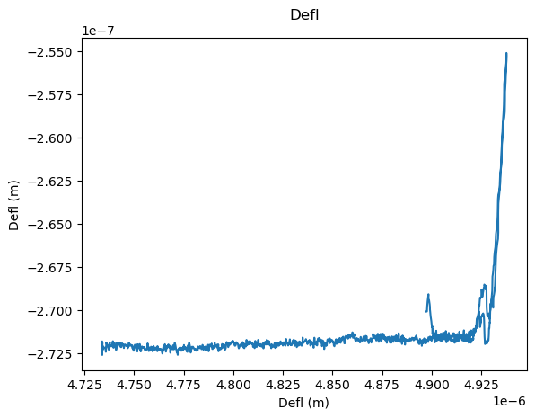
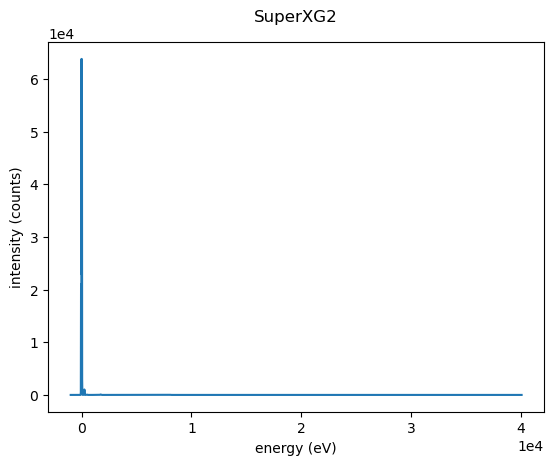

Reading any file with AutoReader#
AutoReader looks at a file, decides which SciFiReaders reader fits it, and reads it for you. You do not need to know the format in advance.
Below we read an Igor .ibw file from an AFM and a Velox .emd file from a TEM, using the same two lines of code for both.
[1]:
import sys
import urllib.request
import matplotlib.pyplot as plt
sys.path.insert(0, '../')
import SciFiReaders
import sidpy
print('SciFiReaders version:', SciFiReaders.__version__)
print('sidpy version:', sidpy.__version__)
SciFiReaders version: 0.12.7
sidpy version: 0.12.3
Get two example files#
One AFM file and one TEM file, downloaded from the SciFiDatasets repository.
[2]:
afm_url = ('https://github.com/pycroscopy/SciFiDatasets/blob/main/'
'data/microscopy/spm/afm/IgorIBWReader_ForceCurve.ibw?raw=true')
tem_url = ('https://raw.githubusercontent.com/pycroscopy/SciFiDatasets/main/'
'data/microscopy/em/tem/EMDReader_Spectrum_FEI.emd')
urllib.request.urlretrieve(afm_url, 'example.ibw')
urllib.request.urlretrieve(tem_url, 'example.emd')
[2]:
('example.emd', <http.client.HTTPMessage at 0x16c41f5d0>)
Read the AFM file#
We pass the file name to AutoReader and call read().
[17]:
reader = SciFiReaders.AutoReader('example.ibw')
datasets = reader.read()
print('chosen reader:', reader.reader_cls.__name__)
print('channels found:', list(datasets.keys()))
chosen reader: IgorIBWReader
channels found: ['Channel_000', 'Channel_001', 'Channel_002']
[18]:
# Each channel is a sidpy Dataset, so we can plot it directly.
first_channel = datasets['Channel_001']
print(first_channel)
first_channel.plot();
sidpy.Dataset of type SPECTRUM with:
dask.array<array, shape=(1261,), dtype=float32, chunksize=(1261,), chunktype=numpy.ndarray>
data contains: Defl (m)
and Dimensions:
Defl: Defl (m) of size (1261,)

Read the TEM file#
Same two lines, different format. AutoReader picks a different reader this time.
[11]:
reader = SciFiReaders.AutoReader('example.emd')
datasets = reader.read()
print('chosen reader:', reader.reader_cls.__name__)
print('channels found:', list(datasets.keys()))
chosen reader: EMDReader
channels found: ['Channel_000']
[14]:
spectrum = datasets['Channel_000']
print(spectrum)
spectrum.plot();
sidpy.Dataset of type SPECTRUM with:
dask.array<array, shape=(2048,), dtype=uint16, chunksize=(1,), chunktype=numpy.ndarray>
data contains: intensity (counts)
and Dimensions:
energy_scale: energy (eV) of size (2048,)
with metadata: ['experiment', 'EDS']
